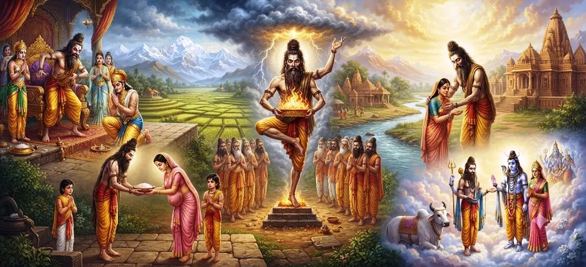

The Narrative of Durvasa
Chapter 19 of the Shatarudra Samhita presents the sacred narrative of Sage Durvasa, whose extraordinary temperament and spiritual power are connected with the Rudra aspect of Lord Shiva.
Durvasa's story begins with the penance of Sage Atri and the appearance of the divine Trinity. From this sacred blessing came three sons: Chandra, Dattatreya, and Durvasa, associated respectively with the divine aspects of Brahma, Vishnu, and Shiva.
The chapter reveals both sides of Durvasa's nature. He is fierce, quick to anger, and capable of pronouncing powerful curses, yet he is also capable of profound generosity and granting blessings to those who please him through devotion, respect, or righteous conduct.
Chapter 19 Highlights
The Birth of Durvasa
The narrative begins with Atri's penance and the divine blessing that led to the birth of Durvasa.
Rudra Aspect
Durvasa is presented as bearing the Rudra aspect of Lord Shiva.
Fiery Temper
His intense nature makes him a powerful and unpredictable sage.
The Ambarisha Episode
Durvasa's confrontation with King Ambarisha reveals the danger of anger and the power of devotion.
Blessings and Grace
The sage's benevolent side is revealed through the blessings he grants when pleased.
Lessons of Conduct
The narrative encourages patience, respect, devotion, humility, and awareness of consequences.
Core Topics in This Chapter
- 01 The Origin of Durvasa →
- 02 Atri's Penance and the Divine Trinity →
- 03 The Three Divine Sons →
- 04 The Rudra Nature of Durvasa →
- 05 Durvasa and King Ambarisha →
- 06 The Sudarshana Chakra and Durvasa →
- 07 The Benevolent Side of Durvasa →
- 08 Durvasa and Lord Rama →
- 09 Durvasa and Lord Krishna →
- 10 Durvasa and Draupadi →
- 11 The Spiritual Message of Durvasa's Story →
The Origin of Durvasa
The narrative begins with Sage Atri, a great seer who undertook severe penance with the desire to obtain a son. His wife was Anasuya, renowned for her purity, virtue, and noble qualities.
Pleased by Atri's intense austerity, the Divine manifested before him. The sacred account describes the appearance of Brahma, Vishnu, and Mahesha, who granted Atri the blessing that divine aspects would be born through him.
Atri's Penance and the Divine Trinity
Atri respectfully offered his obeisance to the Divine Trinity and explained the purpose of his penance. The Trinity assured him that his wish would be fulfilled through sons bearing their respective divine qualities.
Atri then returned to Anasuya, carrying the blessing that would become the foundation of one of the most remarkable sacred family narratives.
The Three Divine Sons
In due course, Anasuya gave birth to three sons. They were Chandra, Dattatreya, and Durvasa, associated respectively with the divine aspects of Brahma, Vishnu, and Shiva.
Durvasa was particularly associated with the Rudra aspect of Shiva. This connection explains the extraordinary intensity, force, and fiery quality that characterize his conduct throughout the narrative.
The Rudra Nature of Durvasa
Durvasa was fiery, intense, unpredictable, and extremely sharp in speech. His temperament caused him to test the patience of many people and to react strongly when he believed that proper conduct, respect, or hospitality had been neglected.
His anger was not portrayed simply as ordinary human irritation. It carried the force of his Rudra nature, making his words and reactions spiritually and dramatically powerful.
Durvasa and King Ambarisha
One of the important episodes associated with Durvasa concerns King Ambarisha. The king was devoted to Lord Vishnu and was observing a sacred fast. Durvasa arrived as a guest, and the proper observance of the religious vow became the center of a difficult situation.
Durvasa believed that Ambarisha had committed an impropriety by taking something before properly feeding his guest. Angered by what he considered an insult, Durvasa prepared to curse the king.
The Sudarshana Chakra and Durvasa
The situation became dangerous when Vishnu's Sudarshana Chakra appeared to protect His devoted servant. Durvasa, who was himself connected with the Rudra aspect of Shiva, found himself facing the divine weapon.
Rather than responding with hatred, Ambarisha prayed that Durvasa's life be spared. His prayer brought about the calming of the divine weapon, and Durvasa was able to depart safely.
The episode highlights the power of devotion and the spiritual strength of forgiveness and compassion.
The Benevolent Side of Durvasa
Durvasa's character was not defined only by anger and curses. The sacred narrative also presents him as a generous sage who could grant powerful blessings when pleased by the conduct of others.
This dual nature is central to understanding Durvasa. His fierceness could become a test, while his satisfaction could become a source of grace.
Durvasa and Lord Rama
The narrative also recalls an occasion when Durvasa sought a private meeting with Lord Rama and requested that there be no interruption. During their conversation, Lakshmana entered because an important message could not wait.
Durvasa was impressed by the seriousness with which Rama upheld his word and duty. Rather than leaving only anger behind, the sage ultimately blessed Rama.
Durvasa and Lord Krishna
Durvasa also visited Dvaraka, where Lord Krishna received him with the honor and hospitality appropriate to a revered sage. Pleased with Krishna's conduct, Durvasa granted him a powerful blessing.
This episode reinforces an important feature of Durvasa's character: the same sage who could become fierce when displeased could also become extraordinarily generous when treated with devotion and respect.
Durvasa and Draupadi
Another remembered episode concerns Draupadi. During one occasion, Durvasa lost his loin cloth while bathing and found himself in an embarrassing situation. Draupadi responded with compassion by giving him a piece of cloth torn from her own garment.
Pleased by her compassionate act, Durvasa blessed Draupadi. The episode illustrates how a small act of kindness can become the cause of divine grace.
The Spiritual Message of Durvasa's Story
The story of Durvasa teaches that spiritual power and intense temperament must be approached with awareness and respect. His presence repeatedly tests the conduct, patience, hospitality, humility, and devotion of those who encounter him.
At the same time, the narrative does not present anger as the final truth of Durvasa's character. His blessings reveal that the fierce Rudra energy also contains the capacity for grace, generosity, protection, and spiritual benefit.
Key Teachings of Chapter 19
Respect
Reverence toward sages, guests, and sacred duties is repeatedly emphasized.
Compassion
Ambarisha and Draupadi's actions demonstrate the strength of compassion.
Control of Anger
Durvasa's fiery nature reminds us of the consequences that can follow uncontrolled anger.
Devotion
The Ambarisha episode demonstrates the protective power associated with sincere devotion.
Grace
Durvasa's blessings show that fierce spiritual energy can also become a source of grace.
Consequences
The narrative encourages awareness that actions, words, and attitudes can produce lasting consequences.
Spiritual Reflection
The story of Durvasa presents a profound picture of Rudra energy. His anger is formidable, his words carry power, and his presence can transform the circumstances of those around him. Yet the same sage can become compassionate and generous when touched by devotion, hospitality, sincerity, or kindness. This contrast invites the devotee to look beyond the surface of the story. Spiritual strength should not become an excuse for uncontrolled anger. Power is most beneficial when joined with wisdom, discipline, and compassion. The Ambarisha episode especially emphasizes the strength of sincere devotion and the importance of forgiveness. Ambarisha does not respond to Durvasa's anger with hatred; instead, he seeks the sage's protection even when he himself is threatened. The later stories of Durvasa's blessings similarly show that sincere acts of respect and kindness can awaken grace. In this way, the narrative teaches the devotee to cultivate patience, humility, compassion, reverence, and awareness in every encounter.
Living the Message of Chapter 19
The story of Durvasa can be brought into daily life by learning to pause before reacting in anger. Difficult people and difficult situations can become opportunities to practice patience, humility, and self-control.
The narrative also encourages us to recognize the value of small acts of kindness. Respect toward guests, compassion toward those in difficulty, and sincere devotion can have consequences far greater than their outward appearance suggests.
In this way, the fierce story of Durvasa becomes a practical lesson in self-discipline, compassion, devotion, and responsible speech.
Key Spiritual Concepts
The powerful sage presented in this chapter as bearing the Rudra aspect of Lord Shiva.
The great sage whose penance precedes the birth of Chandra, Dattatreya, and Durvasa.
The virtuous wife of Atri and mother of the three divine sons.
The fierce and powerful aspect of Shiva associated with Durvasa in this narrative.
The devoted king whose encounter with Durvasa becomes one of the chapter's central episodes.
The divine discus that appears in the Ambarisha episode and protects the devotee.
Sincere devotion, especially emphasized through the conduct of Ambarisha.
Chapter Summary
Shatarudra Samhita Chapter 19 presents the sacred Narrative of Durvasa. The account begins with the severe penance of Sage Atri and the appearance of Brahma, Vishnu, and Mahesha. From the divine blessing came three sons, Chandra, Dattatreya, and Durvasa, associated respectively with the divine aspects of Brahma, Vishnu, and Shiva. Durvasa, bearing the Rudra aspect, became renowned for his fiery temperament, sharp speech, powerful curses, and extraordinary spiritual force. The episode involving King Ambarisha demonstrates both the danger of uncontrolled anger and the protective power of sincere devotion. Yet Durvasa's character also includes a generous and benevolent side. His encounters with Lord Rama, Lord Krishna, and Draupadi reveal that respectful conduct, hospitality, devotion, and kindness could bring forth his blessings. The chapter therefore presents Durvasa not merely as an angry sage, but as a complex embodiment of Rudra energy, capable of both fierce testing and profound grace. The sacred narrative now moves forward toward the next chapter, The Incarnation of Hanuman and His Story.
Frequently Asked Questions
① Who was Sage Durvasa?
In this narrative, Durvasa is one of the three sons of Atri and Anasuya and is presented as bearing the Rudra aspect of Lord Shiva.
② Who were the three sons of Atri and Anasuya?
The three sons were Chandra, Dattatreya, and Durvasa, associated respectively with the divine aspects of Brahma, Vishnu, and Shiva.
③ Why was Durvasa known for his anger?
The narrative connects his intense and fiery temperament with the Rudra aspect of Lord Shiva.
④ What happened between Durvasa and King Ambarisha?
Durvasa became angry over the observance of Ambarisha's sacred fast and was about to curse him. Vishnu's Sudarshana Chakra appeared to protect Ambarisha, after which the king prayed for Durvasa's life to be spared.
⑤ Did Durvasa only curse people?
No. The chapter also emphasizes his generous side. When pleased by devotion, hospitality, or kindness, Durvasa could grant powerful blessings.
⑥ What is the spiritual lesson of Durvasa's story?
The story encourages patience, humility, compassion, respect, devotion, careful speech, and awareness of the consequences of anger.
⑦ What chapter comes before The Narrative of Durvasa?
The previous chapter is Shiva's Eleven Incarnations.
⑧ What chapter comes after The Narrative of Durvasa?
The next chapter is The Incarnation of Hanuman and His Story.
“Where anger tests the heart, devotion, patience, and compassion reveal its true strength.”
Continue Through Shatarudra Samhita
Continue from Shiva's Eleven Incarnations into the sacred Narrative of Durvasa, and then proceed to The Incarnation of Hanuman and His Story.